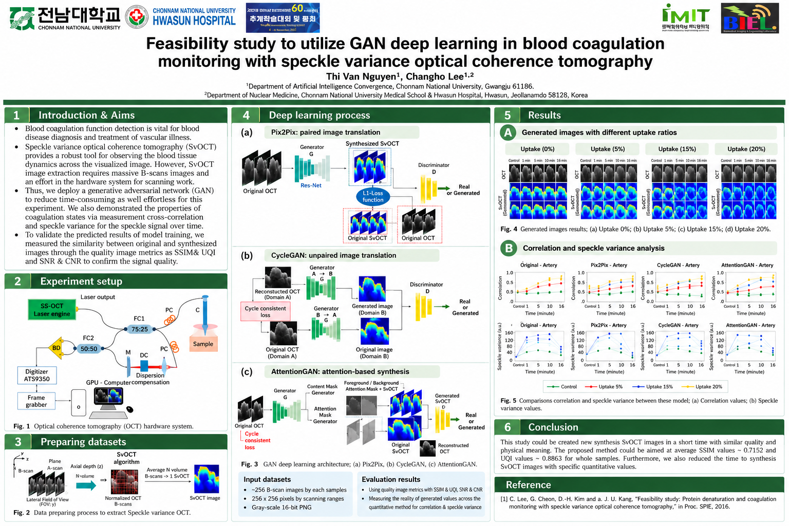

Research project
Coagulation Monitoring with Speckle-Variance OCT
Research in speckle-variance optical coherence tomography (SvOCT) for coagulation monitoring.
Featured conference poster: GAN-enhanced SvOCT
This poster documents image synthesis experiments using Pix2Pix, CycleGAN and AttentionGAN, with quantitative comparisons using SSIM, UQI, correlation and speckle variance.

Research motivation
Large OCT volumes and computationally intensive processing motivate the investigation of learning-based methods.
Approach & scope
The research portfolio describes phantom, in-vitro and in-vivo experiments, alongside image-processing and deep learning approaches to quantitative speckle-variance analysis.


Source: Research Experience – Van Nguyen (supplied portfolio). Images reproduced from the original portfolio.
Methodology
- Acquire optical coherence tomography (OCT) B-scans during coagulation experiments.
- Prepare speckle-variance OCT representations for comparison with synthesized images.
- Evaluate Pix2Pix, CycleGAN and AttentionGAN image translation approaches.
- Compare original and generated images using SSIM, UQI, correlation and speckle-variance measurements.
Results and interpretation
The featured poster reports average SSIM around 0.7152 and UQI around 0.8863 for the described experiments. These are poster-reported image-quality metrics, not clinical accuracy measures.